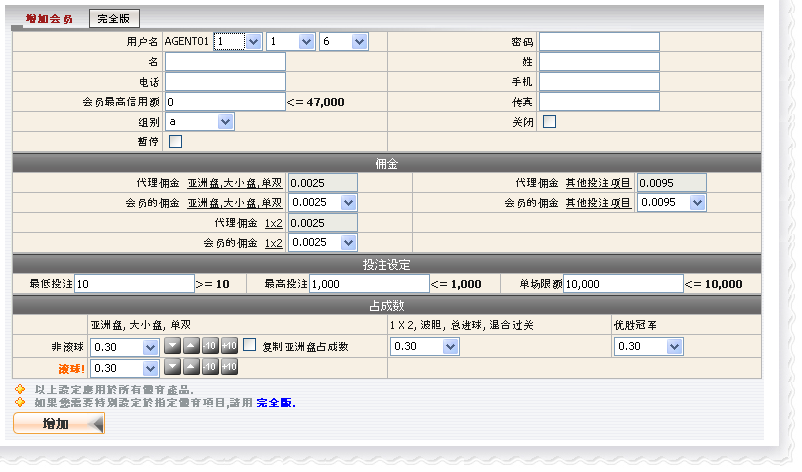
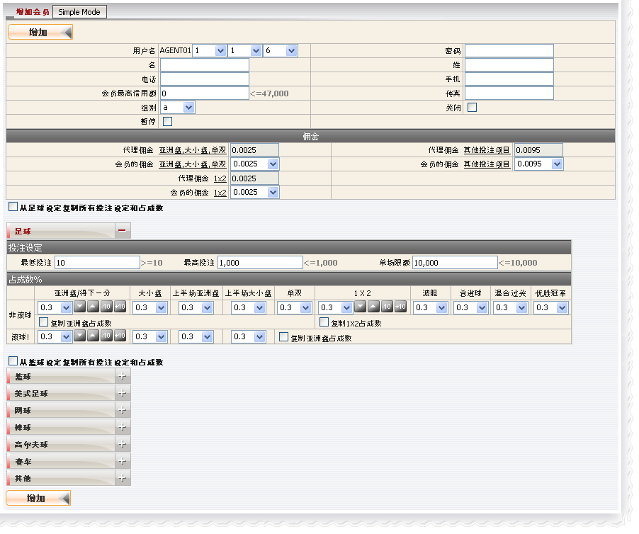
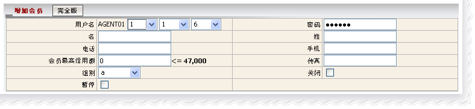
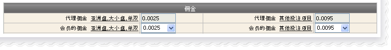
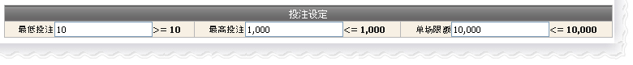
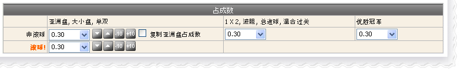
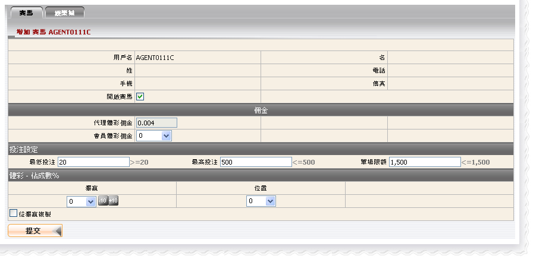
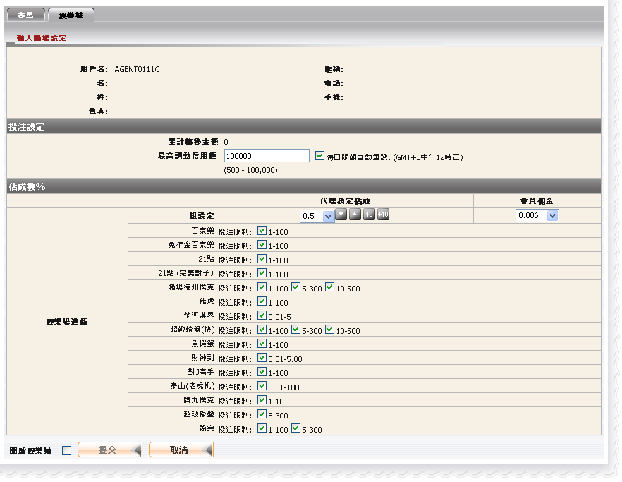

新增会员
定义:
这个功能让代理新增一个会员, 然后编辑其佣金, 投注设定及对该会员的占成数。
当我们打开新增会员功能, 新增会员页面将显示适用于所有运动类别的简易模式。但我们能点击完全模式按钮以更换成完全模式。

新增会员 - 简易模式

新增会员 - 完全模式
如何?
为了实现创建一个新的会员, 您必须填写:
- 会员资料登记.
- 佣金设置.
- 投注设定.
- 占成数设定.
会员资料登记
这是填写会员的所需的资料。 在这个形式中, 以下几点值得关注:
- 会员最高信用额不能大于代理的最高信用额。代理的会员最高信用额度由上线设置。
- 有8组会员: a, b, c, d, hka, hkb, hkc, hkd。不同组别代表不同的会员佣金设置。
- 密码必须至少6个字符, 包括2个号码和2个数字。
- 若您的状态为暂停, 那么您的会员状态同样为 "暂停", 这意味着他/她无法投注。
- 若您的状态为关闭, 那么您的所有会员状态也将会关闭。
- 若您的状态不是暂停, 那么您可以随时修改您的会员状态为暂停。
- 若您更改会员状态为关闭那么他/她将无法登陆会员网进行投注。

会员资料
佣金设置:
这是为了设定会员折扣, 只需从下拉列表中选取一个折扣值, 记得会员折扣不能大于代理折扣。

佣金设置
用词注解:
- 代理佣金: 亚洲盘, 大小盘, 单双: 由上线设定的代理折扣适用于亚洲盘,大小盘及单双的投注类别。
公式: 代理佣金 = 投注额 * 代理折扣 * 上线占成
- 会员佣金: 亚洲盘, 大小盘, 单双: 由代理设定的会员折扣适用于亚洲盘,大小盘及单双的投注类别。
公式: 会员佣金 = 投注额 * 会员折扣
投注设定:
此设定将限制会员投注金额, 若违反规定那么警告信息将出现通知会员。必须注意的是最低投注 < 最高投注 < 单场限额.

投注设定
定义:
- 最低投注: 每张注单会员必须投注的最低金额.
- 最高投注: 每张注单会员能够投注的最高金额.
- 单场限额: 每场比赛会员能够投注的最高金额.
备注: 不同条目/队名将被视为另一场赛事。
例如, 以下赛事都将被视为不同的赛事或个别的项目。
a) 西班牙 (中 ) -vs- 荷兰 [2010 FIFA南非世界杯 ]
b) 西班牙 00:00-15:00 -vs- 荷兰 00:00-15:00 [2010 FIFA南非世界杯 - 特定 15 分钟大小]
c) 西班牙 15:01-30:00 -vs- 荷兰 15:01-30:00 [2010 FIFA南非世界杯 - 特定 15 分钟大小]
即使联赛名称相同, 但由于不同的队伍名称, 上述条件仍然适用。
占成数设定:
这个设定将决定您对会员投注额的输赢数额。我们可以在完全模式内定义不同的设置于个别运动类别。

占成数设定
完成所有这些步骤之后, 系统将引导您进入下一个页面以更新赛马及娱乐城设置。
更新赛马的设置
会员必须被启动赛马方能对赛马进行投注。

赛马
更新娱乐城的设置
会员必须被启动娱乐城方能进行娱乐城游戏。

娱乐城
用词注解:
非滚球: 这个选项的占成数适用于预定中的赛事投注。
滚球: 这个选项的占成数适用于现场赛事的投注。
累计转移金额: 包括今日输赢的能够被调动总额, 这个值能手动式被重设或每天中午时分自动重设。
最高调动信用额 : 能够调动至娱乐城的最高数额. 这个值必须归类于从0到信用额度及设定"无限制"为默认。
娱乐城投注限制: 此值为会员设置, 也将限制每场游戏的投注额度。在游戏进行前会员将会有几个选项以选择负担得起的投注范围。
注: 累计转移金额 = 最高调动信用额 + 今日输赢